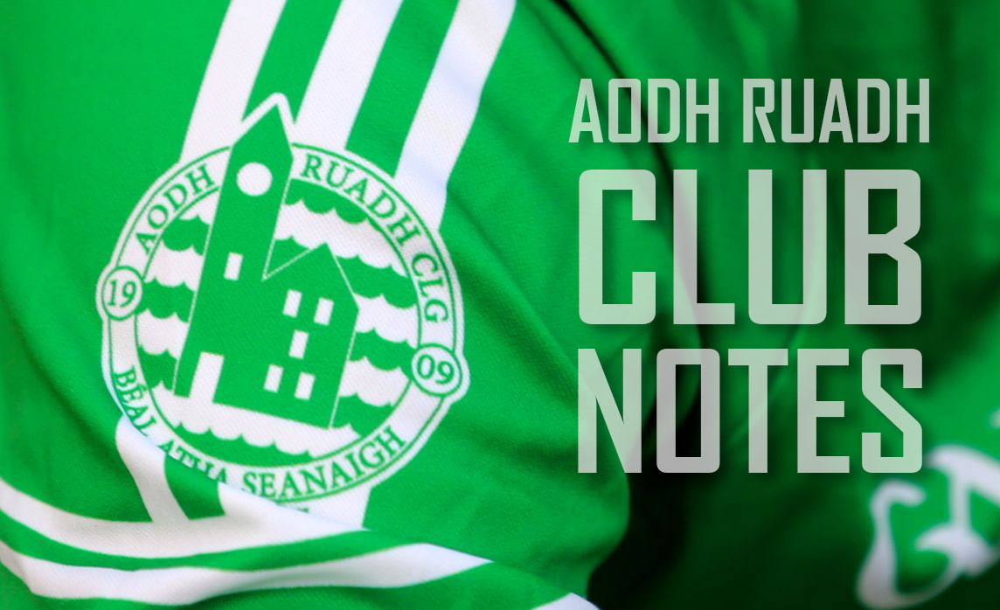

About Aodh Ruadh CLG.
We are a GAA Club in Ballyshannon in County Donegal. Historically we, Aodh Ruadh are one of Donegals most successful GAA clubs, they have won 12 Donegal Senior Football Championships, they currently compete in Division 1 of the league and the Senior Championship. Our club colours are green and white and we play. our home games in Father Tierney Park. Read more on the history of our Club!